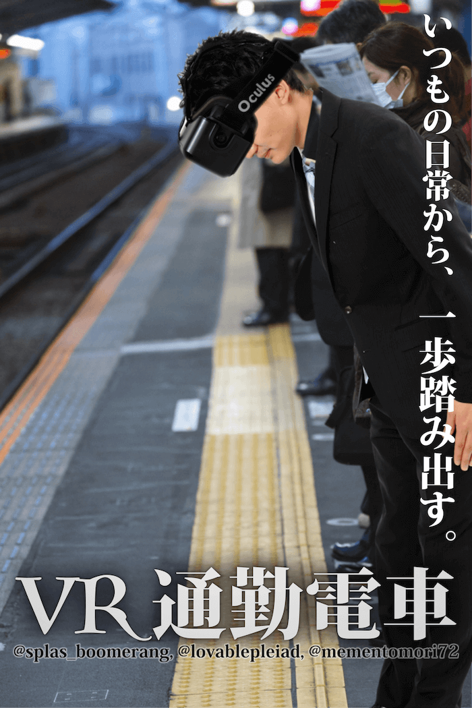

概要
- 2015.2.28に大須で行われた「バーチャル体験祭」に出展しました。
- Oculus Rift DK2とトラッキングカメラを使用しています。
- 開発環境: UnrealEngine4
- 担当箇所: プログラム全般
体験内容
- 体験者には、頭を下げて「前に移動する操作」のみができると説明します。
- コンテンツ開始。
- 駅のホームで電車を待っているシーンになります。
- しばらくすると電車がホームに入ってきます。
- ドアが開き、「前に移動する操作」で電車に乗り込みます
- 電車が出発し、少しすると画面がフェードアウトします。
- 2~6を繰り返します。
- 最後にある方法(=
非日常体験)で体験を終了させてもらいます。